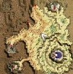
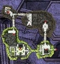
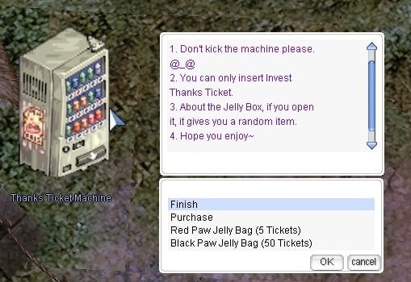

File list
This special page shows all uploaded files.
{kind=link}
{kind=link}
| Date | Name | Thumbnail | Size | User | Description | Versions |
|---|---|---|---|---|---|---|
| 01:21, 10 September 2015 | Morrigane's Pendant.png (file) | 490 bytes | AloeLeaflet | 1 | ||
| 01:20, 10 September 2015 | Morrigane's Helm.png (file) | 622 bytes | AloeLeaflet | 1 | ||
| 01:20, 10 September 2015 | Morrigane's Belt.png (file) | 438 bytes | AloeLeaflet | 1 | ||
| 01:07, 10 September 2015 | Create Potion.png (file) | 753 bytes | AloeLeaflet | 1 | ||
| 01:06, 10 September 2015 | Pharmacy.png (file) | 753 bytes | AloeLeaflet | 2 | ||
| 01:05, 10 September 2015 | Mixed Cooking.gif (file) | 1 KB | AloeLeaflet | 1 | ||
| 01:05, 10 September 2015 | Change Material.png (file) |  |
1 KB | AloeLeaflet | 1 | |
| 01:04, 10 September 2015 | Special Pharmacy.png (file) | 1 KB | AloeLeaflet | 1 | ||
| 01:01, 10 September 2015 | Brewing and Cooking.png (file) | 28 KB | AloeLeaflet | 1 | ||
| 00:54, 10 September 2015 | STR Gloves.png (file) | 417 bytes | AloeLeaflet | 1 | ||
| 00:53, 10 September 2015 | Valkyrja's Shield.png (file) | 493 bytes | AloeLeaflet | 1 | ||
| 00:53, 10 September 2015 | Temporal Dex Boots.png (file) |  |
505 bytes | AloeLeaflet | 1 | |
| 00:53, 10 September 2015 | Blue Potion.png (file) | 458 bytes | AloeLeaflet | 1 | ||
| 00:53, 10 September 2015 | White potion.png (file) | 473 bytes | AloeLeaflet | 1 | ||
| 00:52, 10 September 2015 | Potion Pitcher.png (file) | 710 bytes | AloeLeaflet | 1 | ||
| 00:52, 10 September 2015 | Glistening Coat.png (file) | 474 bytes | AloeLeaflet | 1 | ||
| 00:50, 10 September 2015 | Full Chemical Protection.png (file) | 828 bytes | AloeLeaflet | 1 | ||
| 00:48, 10 September 2015 | Bottle Grenade.png (file) | 578 bytes | AloeLeaflet | 1 | ||
| 00:48, 10 September 2015 | Acid Bottle.png (file) | 482 bytes | AloeLeaflet | 1 | ||
| 00:48, 10 September 2015 | 7136.png (file) | 482 bytes | AloeLeaflet | 2 | ||
| 00:46, 10 September 2015 | 7135.png (file) | 578 bytes | AloeLeaflet | 1 | ||
| 00:41, 10 September 2015 | AcidDemo zpsb6575b0f.png (file) | 530 bytes | AloeLeaflet | 4 | ||
| 00:38, 10 September 2015 | Poring king.png (file) | 98 KB | AloeLeaflet | 1 | ||
| 00:38, 10 September 2015 | Soul Cannon Ball.png (file) | 784 bytes | AloeLeaflet | 1 | ||
| 00:37, 10 September 2015 | Shadow Cannon Ball.png (file) | 759 bytes | AloeLeaflet | 1 | ||
| 00:36, 10 September 2015 | Holy Cannon Ball.png (file) | 548 bytes | AloeLeaflet | 1 | ||
| 17:05, 6 September 2015 | SlotMachine.jpg (file) | 33 KB | Renata | 1 | ||
| 17:02, 6 September 2015 | GCCPXchange.jpg (file) | 26 KB | Renata | 1 | ||
| 17:02, 6 September 2015 | TheClaw201509.jpg (file) | 49 KB | Renata | 1 | ||
| 17:00, 6 September 2015 | GCVending.jpg (file) | 54 KB | Renata | 1 | ||
| 13:38, 6 September 2015 | DailyRwrd LoyalMerch.jpg (file) | 46 KB | Renata | The Daily Reward NPC and Loyal Merchant NPC in Main Office | 1 | |
| 17:43, 5 September 2015 | Iron Cannon Ball.png (file) | 795 bytes | AloeLeaflet | 1 | ||
| 17:36, 5 September 2015 | Black Marketeer.png (file) | 234 KB | AloeLeaflet | 2 | ||
| 17:27, 5 September 2015 | Fairy FLower.png (file) | 529 bytes | AloeLeaflet | 1 | ||
| 17:22, 5 September 2015 | Spiritual Ring.png (file) | 520 bytes | AloeLeaflet | 1 | ||
| 17:19, 5 September 2015 | Variant shoes.png (file) | 594 bytes | AloeLeaflet | 1 | ||
| 17:19, 5 September 2015 | Round Buckler.png (file) | 615 bytes | AloeLeaflet | 2 | ||
| 17:17, 5 September 2015 | Thanatos Hammer.png (file) | 546 bytes | AloeLeaflet | 1 | ||
| 17:16, 5 September 2015 | Orlean's Gown.png (file) | 644 bytes | AloeLeaflet | 1 | ||
| 17:15, 5 September 2015 | 2365.png (file) | 644 bytes | AloeLeaflet | 1 | ||
| 17:11, 5 September 2015 | Jewel Crown.png (file) | 552 bytes | AloeLeaflet | 2 | ||
| 17:09, 5 September 2015 | 5002.png (file) | 552 bytes | AloeLeaflet | 1 | ||
| 16:24, 5 September 2015 | 2builds and game zpsy74zmfg2.png (file) | 9 KB | AloeLeaflet | 1 | ||
| 16:17, 5 September 2015 | Alche zpsqzng3rmj.png (file) | 9 KB | AloeLeaflet | 1 | ||
| 16:12, 5 September 2015 | Intro zpsydhn60os.png (file) | 8 KB | AloeLeaflet | 1 | ||
| 09:06, 5 September 2015 | InvestRchl.jpg (file) |  | 13 KB | Renata | Location of Rachel (Arunafeltz) Cat Paw Merchant | 1 |
| 09:05, 5 September 2015 | InvestJuno.jpg (file) |  | 13 KB | Renata | Location of Juno (Schwartzwald) Cat Paw Merchant | 1 |
| 09:05, 5 September 2015 | InvestAlde.jpg (file) | 13 KB | Renata | Location of Aldebaran (Luina) Cat Paw Merchant | 1 | |
| 09:05, 5 September 2015 | InvestGefn.jpg (file) |  |
12 KB | Renata | Location of Geffen (Britoniah) Cat Paw Merchant | 1 |
| 13:43, 4 September 2015 | InvestThxTix.jpg (file) |  | 81 KB | Renata | 1 |
{kind=link}
{kind=link}
{kind=link}
{kind=link}
{kind=link}
{kind=link}
{kind=link}
{kind=link}